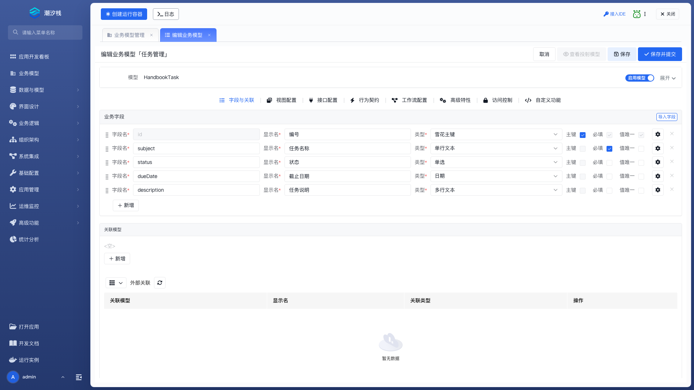
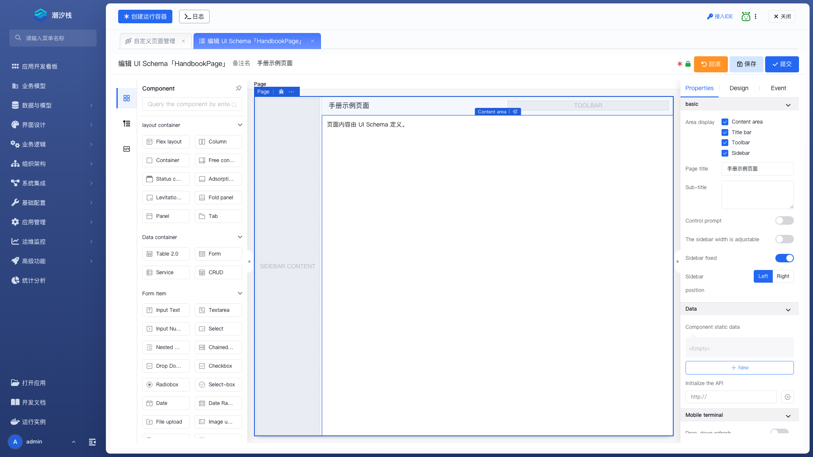
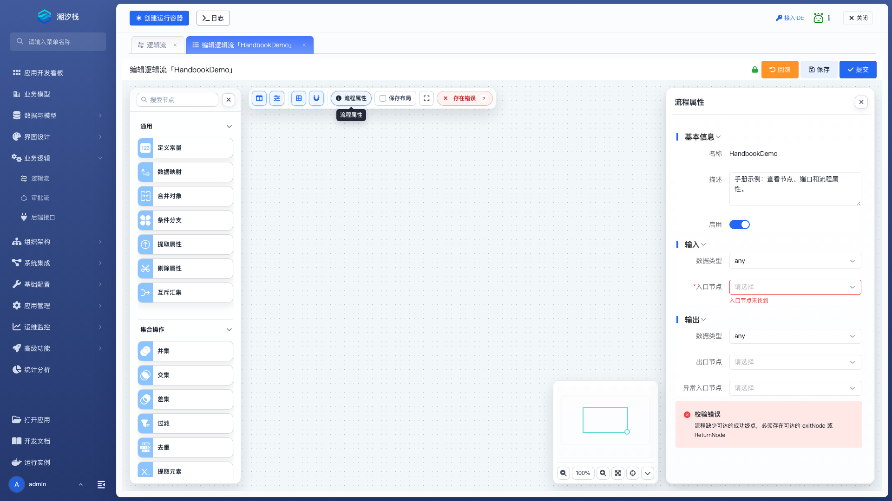
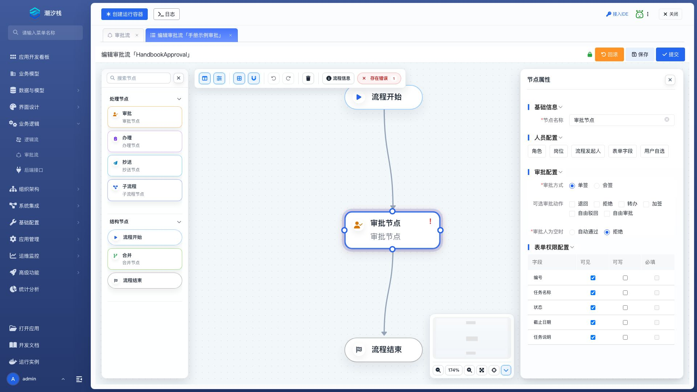
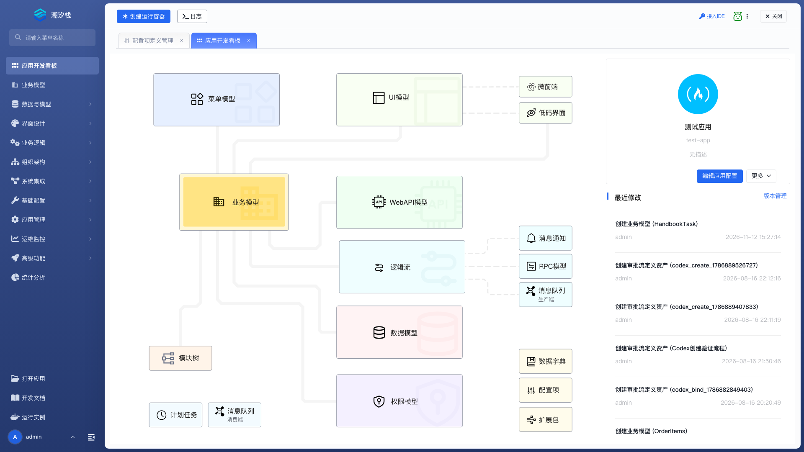

字段与关系
配置字段类型、必填和校验，关联订单与明细、客户与联系人；使用数据字典统一状态和分类，专用字段可通过类型扩展。
特性 / FEATURES
定义订单与客户，配置列表和表单，编排审核与通知，连接 ERP，再为不同角色设置访问范围。模型、配置和代码在同一应用中配合，AI 参与分析、实现与检查。
从订单、客户、合同等业务对象开始，在一处维护字段含义、对象关系、页面视图、业务动作和访问规则。

配置字段类型、必填和校验，关联订单与明细、客户与联系人；使用数据字典统一状态和分类，专用字段可通过类型扩展。
按视图配置投影列表、新建、编辑和详情页面；模型定义关联的数据结构与 WebAPI 使用各自的运行契约。
把提交订单、审核、取消等操作定义为动作，绑定逻辑流或后端实现；用事件记录审核通过等事实，供后续订阅处理。
简单页面通过配置完成，需要调整结构时编辑 UI Schema，复杂交互再使用组件或独立页面扩展。

标准页面承接查询和录入，UI Schema 调整布局、组件、数据接口与动作；PrismUI 将声明式组件树渲染为业务界面。
问卷、报名和临时台账可使用动态表单，部署后支持筛选与 Excel 导入导出；附件和文档能力组织上传文件与共享资料。
数据集、图表和仪表板呈现业务指标，Widget 组合工作台栏目；复杂调度、画布等交互通过组件或微前端接入同一应用。
用节点与连线组织数据读取、校验、计算和接口调用，按条件分支完成一次自动处理。适用于保存前校验、金额计算、数据转换和系统同步。

连接数据操作、转换和接口调用节点，配置输入输出映射与分支条件；例如校验订单、计算金额，再保存处理结果。
表达式处理默认值和短计算，脚本完成局部计算与分支；需要专用算法或协议时，注册自定义节点或调用代码实现。
逻辑流可作为业务动作或 WebAPI 的实现，也可由计划任务或消息消费者调用。通过调试会话检查节点输入输出，定位失败步骤。
将流程绑定到业务模型，以该模型的表单和数据作为申请对象，明确由谁处理、可以执行哪些审批动作，以及满足什么条件后进入下一步。

按角色、岗位、发起人、表单字段或用户自选确定处理人员；配置单签或会签，会签可设置串行、并行与通过比例。
组织审批、办理、抄送和子流程节点，用条件分支决定流转路径；按业务需要启用退回、拒绝、转办或加签等动作。
为不同节点配置字段可见、可写和必填规则；运行时查看当前节点、候选人员与处理记录，在待办生成或审批结束时按需发送通知。
把数据库、HTTP 接口、消息和调度接入业务处理链路。同步 ERP、定期汇总或后台处理，都有对应的配置与扩展入口。
为应用定义稳定的数据源名称，按环境绑定到平台数据源。数据集、逻辑流等引用应用数据源名称，连接地址与凭据由对应环境统一维护。
配置外部 HTTP / RPC 服务的认证、请求方法、地址与参数映射，设置超时和重试，再由逻辑流或代码调用。特殊协议或认证方式通过后端扩展接入。
使用 Cron 表达式设置执行时间，选择逻辑流并配置固定输入，完成每日汇总、周期同步或定时清理。指定延迟后执行一次的处理，由业务逻辑另行创建延迟任务。
配置生产者或消费者绑定，指定主题、分组与路由参数。生产者发送业务消息，消费者接收载荷后交给逻辑流处理；失败、重试和重复投递按中间件与业务规则验证。
业务处理完成或需要人员参与时，通过通知触达相关人员；在线页面需要及时展示变化时，通过实时通道接收状态并更新界面。
角色、岗位和组织定义人员职责，权限项约束菜单、页面和接口，数据规则继续约束能看到哪些记录、哪些字段。
定义应用内置角色，为用户分配角色，按职责授予菜单、页面、接口与业务操作权限。例如销售可以提交订单，主管可以审核订单。
建立公司、部门、岗位与员工关系，表达人员归属和业务职责。审批人员与通知接收人可以依据相应组织关系解析。
用筛选条件限定角色可访问的业务记录。例如销售仅查看自己的订单，部门负责人查看本部门的数据，规则在后端数据访问时执行。
按角色配置字段访问范围，控制记录中哪些信息可被读取或写入。例如向财务开放结算字段，向其他角色限制敏感金额和个人信息。
通过对应适配接入 OIDC、CAS、企业目录或协作平台登录，确认访问者身份。登录后的页面、接口和数据访问继续由角色与权限规则约束。
为关键 HTTP 业务操作配置日志模板，记录操作人、时间、业务对象、摘要与结果，并对敏感字段脱敏。按业务键回溯操作，完整调用链通过团队的链路追踪系统分析。
可视化编辑保存模型定义，代码扩展补充专用实现，AI 根据模型与文档辅助开发。应用工作区、测试实例和版本管理连接这些成果。

通过 IDEA / VS Code 插件编辑元数据并绑定项目，用 Java / Spring Boot 实现后端扩展，用组件和微前端扩展界面；本地 IDE 可与平台测试实例联调。
向 AI 提供业务目标、模型、Schema、手册与 Skills，辅助分析、修改和校验；生成的模型与代码进入原有项目，由开发者评审和验收。
创建或刷新测试实例，查看日志并验证正常、异常和无权限场景；版本记录模型与代码的配套组合，生产部署和数据变更按团队流程管理。
以下是组合示例：销售录入订单，主管审核，审核通过后同步 ERP，调度人员在专用工作台安排交付。
确定字段、客户关系、状态与可执行动作，配置标准列表、表单和详情。
用审批流指定审核人员和通过、驳回路径，权限控制谁可以提交与审核。
审核通过后由逻辑流调用外部接口；耗时同步可通过消息队列异步处理，保存同步结果与失败信息。
为复杂调度编写组件或微前端，继续调用同一应用的业务接口，实时展示处理状态。
检查正常、驳回、同步失败和无权限场景，保存配套版本，再按团队部署流程交付。